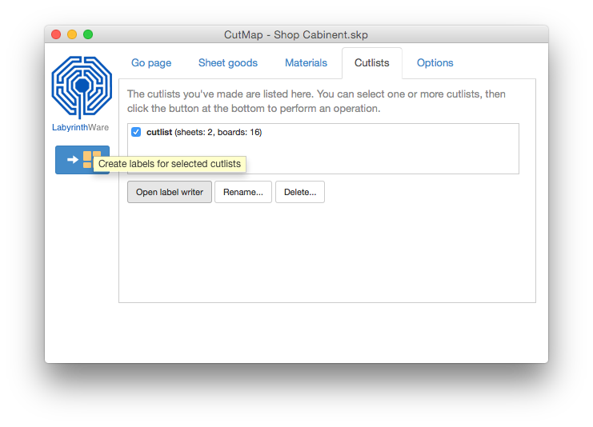
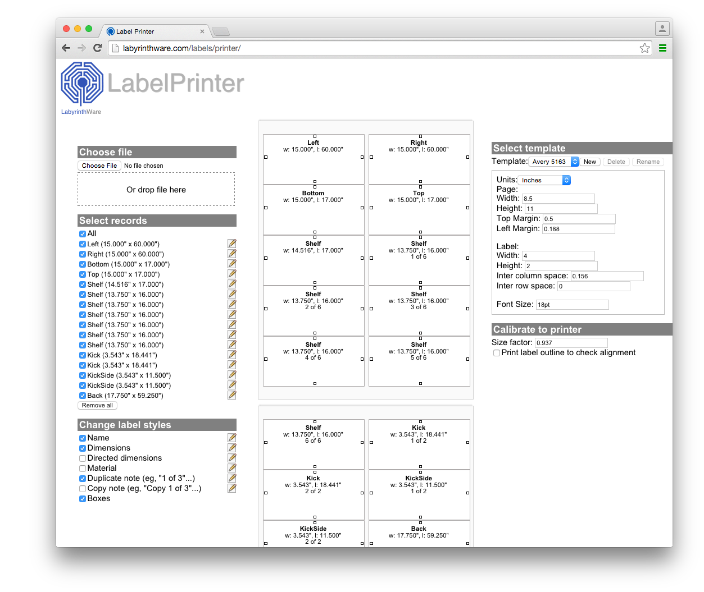
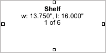

CutMap creates in-model cutting diagrams (cutlists) from a SketchUp
models. The power of in-model cutlists are that you leverage the power
of SketchUp to view, examine, and modify your cutlists.
For example, here is a model of a simple planter box made of
plywood:
We then open the CutMap extension, set and select options if needed,
then create the cutlist.
CutMap will create a cutlist on your model in a separate scene:
Cutlist zoomed in:
Demonstration:
First Run
In CutMap, cutlists are created in scenes and layers that are separate from
your main model.
If your SketchUp document doesn't contain scenes, or all geometry is
written to the default "layer0", then CutMap will ask you if you would
like it to add a main scene and layer.
You will see this screen:
CutMap will change your document to this structure for you. Using
multiple scenes and layers is a very useful way to use SketchUp in
general.
After clicking on "Create Main Scene":
As you can see in the screen shot above, CutMap has created a scene
named "main" and has made the model visible in that scene. Cutlist has
also created a layer named "main" and has placed components that were
previously in layer0 into this layer.
Scenes and layers in model before:
As you can see this model had no scenes and two layers, one named
"drawers" and the default "layer0". The sliding shelf components are
in the "drawers" layer and everything else is in "layer0".
Scenes and layers in model after:
After CutMap creates the main scene and layer, we now have a new
scene and a new layer, both named "main". All components that were in
"layer0" are now assigned to the layer "main". The sliding shelf
compnents remain in the "drawers" layer as before.
Going forward, a good strategy is to continue drawing into "layer0",
but once you have converted the geometry into components (or groups),
to then assign those components to the layer "main" (using the
SketchUp Entity Info window).
Demonstration:
Adding Dimension Callouts
You can add dimension callouts to a cutlist using the SketchUp Dimension tool .
You may find that you do not need dimension callouts at all, as the dimensions on
each board will give you all the information you need to make your cuts.
The advantage of an in-model cutlist is that you can use the tools in SketchUp to create
dimension callouts at any place you need a measurement.
The cutlist is a very precise
map that you can use to plan a cutting strategy, that, depending on your tools, could
involve initial general cuts followed by repeatable story-board type cuts.
When you need to create a dimension callout from the edge of a sheet use the small markers in the sheet corners for the start or end point. Please watch the video below for details.
The SketchUp Tape Measure tool can be very useful to get quick distance measurements between points.
Demonstration:
Printing Labels
Print labels for your cutlist using the CutMap Label Printer. First select a cutlist from the Cutlist tab in the CutMap extension. Then click the Open Label Writer button.

This will bring up Chrome (or your default browser, see below) with the Label Writer page opened, and loaded with the boards of the selected cutlist.

The Label Printer page has three main sections along with the preview pane in the middle.
Select records
This section is where you can select which parts you want to print. Use the All option to quickly select all parts, or no parts. Click on the icon to change any of the specifications for a particular part such as the part name, width, and length. Note that the changes you make here only affect the printed label and will not change any values anywhere else in CutMap or SketchUp.
Change label styles
The Change label styles section lets you select the fields you want on your labels. Click on the icon to change the style of a field.
Select template
The Label Writer comes with a number of pre-loaded templates based on popular label styles available in the USA. You can also design your own templates. To design your own, first select a another template to base it on, then modify a dimension. A new template name will automatically be created. You can then rename or delete the new template using the delete and rename buttons.
Calibrate to printer
The Label Printer attempts to print as accurately as possible. A millimeter should print as a millimeter and an inch as an inch. However, every printer is different so you may find that you have to make an adjustment for your setup.
The Size factor field adjusts the label dimensions when sent to the printer by this value. It could be called a zoom factor. A value of 1 means the dimensions of the label are not adjusted at all. Lower values will make the printed dimensions smaller and a larger value will adjust the printed dimensions larger. The default value is 0.937 (just slightly less than 1:1) because that is value that we found worked best on the HP Laser printer we tested on.
The Print label outline to check alignment field allows you to print an outline around each defined label when printed. This is helpful when you are testing your template alignment. A good method is to print your test cases to blank paper, and then test the alignment by holding the printed page to label sheet.
Tips
Always use Removable labels on wood surfaces.
Uses for the Box field on labels.

The small boxes on labels can be used for many things, such as indicating edges that need special treatment. Another use for using the boxes is to mark a box when the edge indicated is final. For example:
First, prior to making any cuts at all, place the labels on your sheet in the approximate position where they will end up according to the cutlist, orienting all the labels in same direction. This will give you a good visual guide of your overall plans for the sheet. Consistently choosing either the good or bad side for your labels will also give you a good indicator of this important detail (particularly useful when quickly deciding which way to orient the board when making a cut). This strategy can be useful whether you use the boxes or not.
Then, whenever a cut is final for an edge on a board, mark the box on that edge. For instance, when you have edge trimmed a sheet then all boxes adjacent to that edge should be marked. If you are not planning to edge trim a side then mark those boxes immediately. When a cut divides two or more boards exactly, then mark the boxes on adjacent sides of the cut on all affected boards.
When all boxes on a board are marked you know the board is fully dimensioned and ready for the next process.
While the strategy is not needed for all situations is does have a number of advantages.
You pretty much instantly know the state and purpose of a sheet, a segment of a sheet, or a board.
It quickly answers persistent questions such as "Which side is the good side?", "Have I edge trimmed this side?", "Do I have the grain oriented correctly for this board?", and "Do I orient the board up or down for this cut?"
By quickly providing this kind of information, these practices can lesson errors and also speed up the process. The downside is you do have to remember to mark the boxes.
Notes
CutMap normally uses Google's Chrome browser to load the Label Writer. If Chrome is not installed on your computer you can download it here. You do not have to make it your default browser. If you don't want to install Chrome, you can set CutMap to use your default browser instead.
To make CutMap use your default browser, select the Options tab in the CutMap extension, then checkmark the Use default browser for labels option (you may have to scroll down to find it).
The reason CutMap uses Chrome, instead of the default browser, is because the Label Writer web application uses advanced features that may not work correctly in other browsers.
If you do use a browser other than Chrome, please let us know how it works out. We're not trying to to favor one browser over another, we just want to make sure that the labels are printed correctly.


 .
.
 can be very useful to get quick distance measurements between points.
can be very useful to get quick distance measurements between points.
 icon to change any of the specifications for a particular part such as the part name, width, and length. Note that the changes you make here only affect the printed label and will not change any values anywhere else in CutMap or SketchUp.
icon to change any of the specifications for a particular part such as the part name, width, and length. Note that the changes you make here only affect the printed label and will not change any values anywhere else in CutMap or SketchUp.